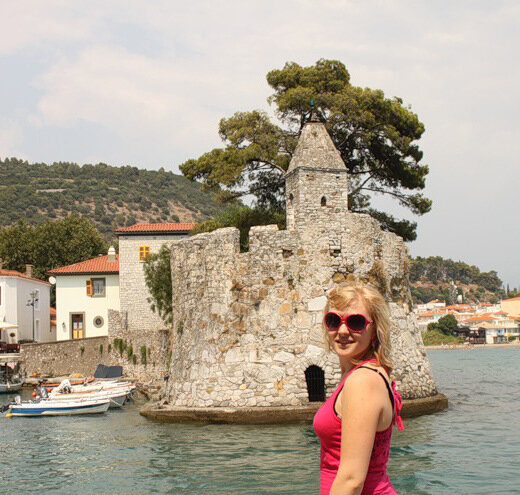
а затем перейду к фотографиям.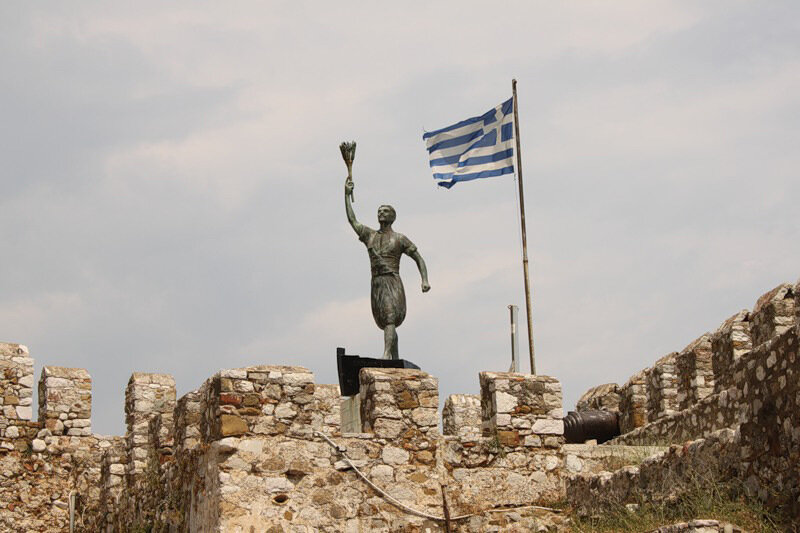
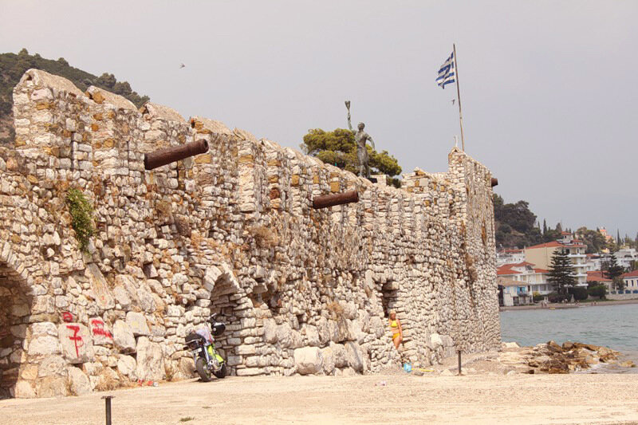
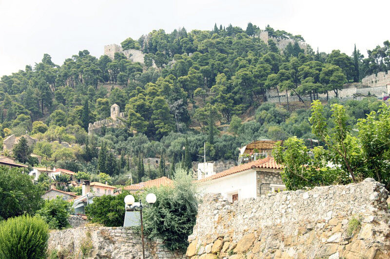
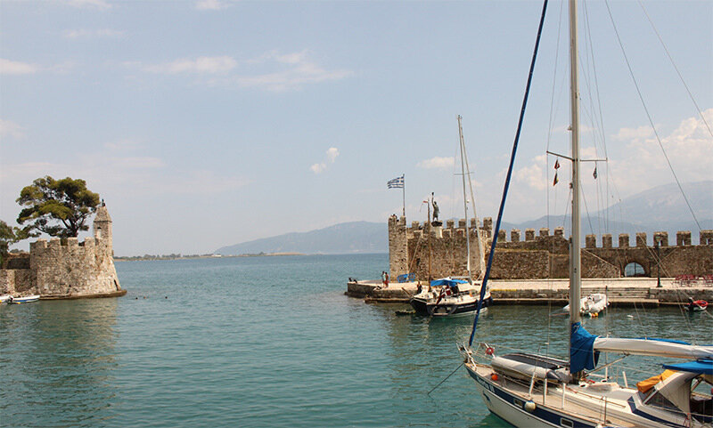
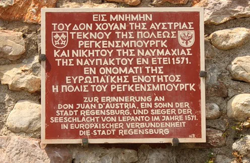
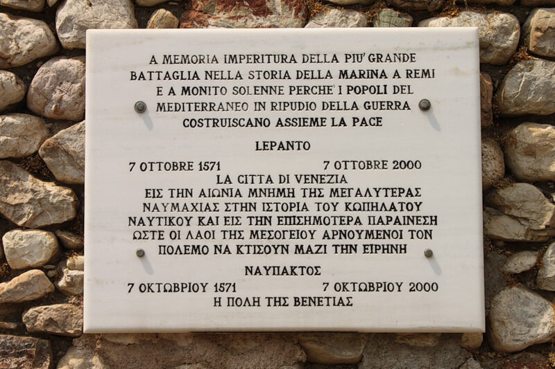
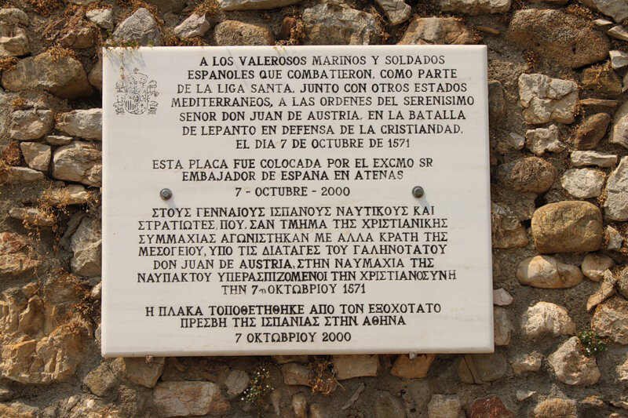
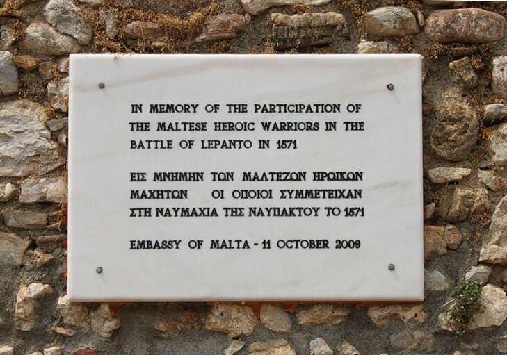
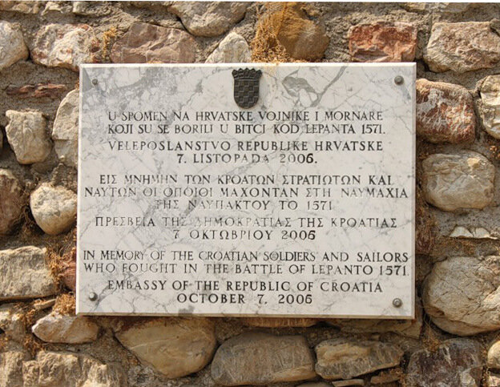
Самый знаменитый участник битвы при Лепанто - Сервантес:
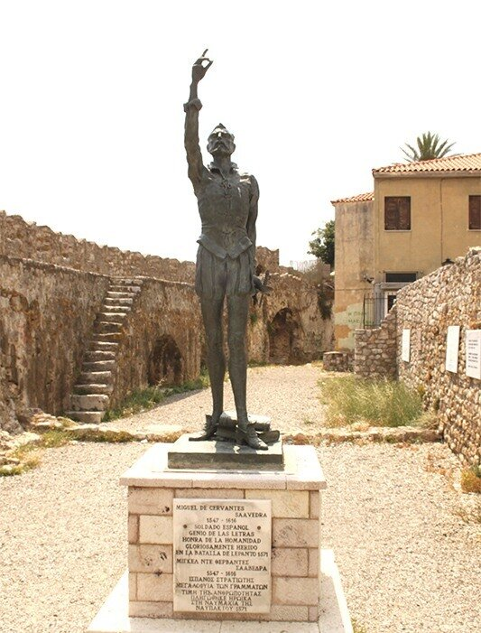
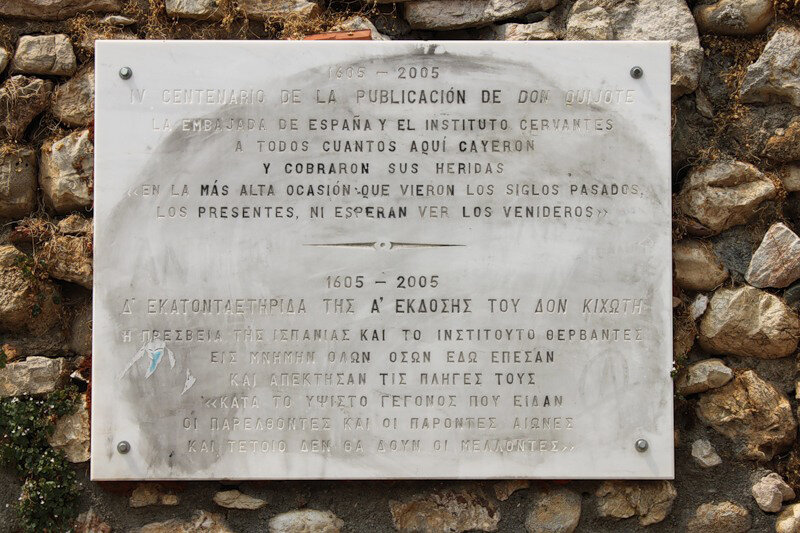
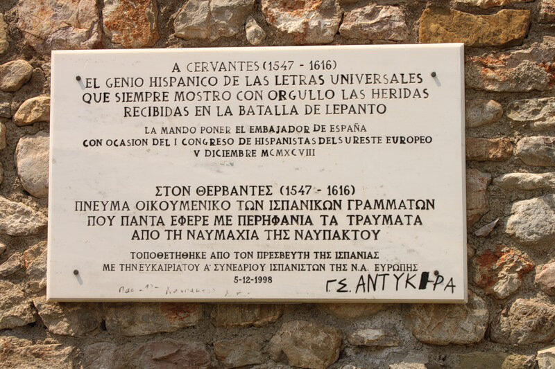
Ну и, конечно, самый великий памятник сражению при Лепанто - море, где оно произошло, и небо, под которым столкнулись две цивилизации, каждая из которых призывала покровителя свыше:
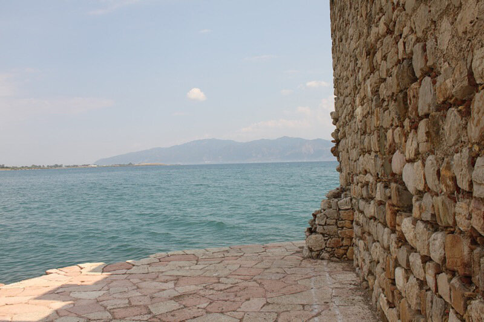